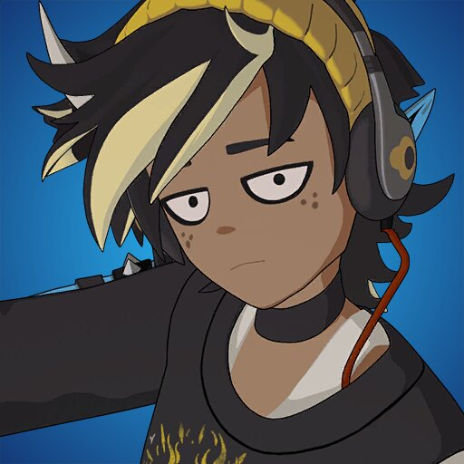
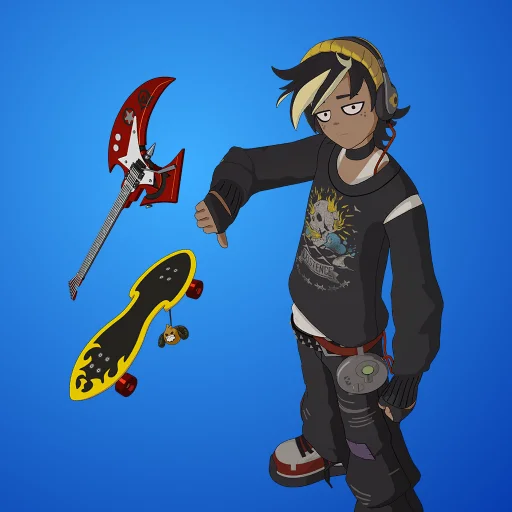

Історія Remi
Remi завжди відчував себе трохи чужим серед інших. У школі він сидів на останній парті, малював гітарні грифі на зошитах і слухав у навушниках музику, яку ніхто не розумів. Його надихали хаотичні акорди панк-року й глибокі електронні біти, тому він почав писати власні треки.
Одного разу, повертаючись пізно ввечері після репетиції зі своєю маленькою групою, він почув дивний звук — ніби музика, але викривлена, спотворена. Remi пішов на звук і натрапив на портал. Він засмоктав його у світ Fortnite.
Там він зрозумів: музика — його сила. Його акорди можуть піднімати бойовий дух союзників, а важкі рифи — збивати ворогів з ритму. Кожен бій для нього — це концерт, кожна перемога — гучний фінальний акорд.
Remi не прагне слави чи багатства. Він хоче, щоб його пісні залишали слід у серцях, навіть якщо це відлуння чути серед вибухів і битв. Його мрія — знайти друзів, які теж чують цей ритм, і створити гурт, який зіграє головний саундтрек світу Fortnite.
